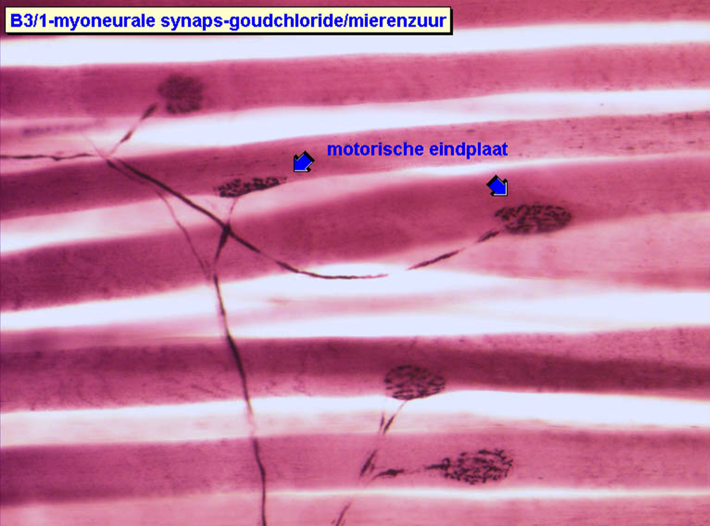

Excitatie-contractiekoppeling of myoneuronale synaps
Hier zie je een whole-mount preparaat van “afgeknipte” spiervezels, m.a.w. het is geen dun schijfje maar een aantal cellen (spiervezels) die uit elkaar zijn getrokken, op een coupe zijn gebracht en gekleurd zijn.
De motorische eindplaat of myoneurale verbinding is een plaats waar het zenuwstelsel en het spierskeletstelsel elkaar onderling beïnvloeden. Het is het morfologisch substraat van de elektromechanische koppeling. Je kan het vergelijken met een speciale vorm van een synaptische verbinding.
Als er op deze plaats de neurotransmitter acetylcholine vrijgegeven wordt, zal de membraan van de spiervezel (de postsynaptische cel) gedepolariseerd en de permeabiliteit veranderd worden (spiercellen zijn net zoals neuronen “prikkelbare cellen”). Na een aantal stappen zal er contractie optreden van de spiercel. Dit is dus een excitatie-contractie koppeling.
Op het beeld zie je heel duidelijk de zenuwuitloper (meer bepaald een axon) die binnenkomt en de motorische eindplaat op deze vezel vormt. Elke skeletspiervezel - hoe lang hij ook is - heeft slechts één dergelijke myoneurale verbinding.
De motorische eindplaat of myoneurale verbinding is een plaats waar het zenuwstelsel en het spierskeletstelsel elkaar onderling beïnvloeden. Het is het morfologisch substraat van de elektromechanische koppeling. Je kan het vergelijken met een speciale vorm van een synaptische verbinding.
Als er op deze plaats de neurotransmitter acetylcholine vrijgegeven wordt, zal de membraan van de spiervezel (de postsynaptische cel) gedepolariseerd en de permeabiliteit veranderd worden (spiercellen zijn net zoals neuronen “prikkelbare cellen”). Na een aantal stappen zal er contractie optreden van de spiercel. Dit is dus een excitatie-contractie koppeling.
Op het beeld zie je heel duidelijk de zenuwuitloper (meer bepaald een axon) die binnenkomt en de motorische eindplaat op deze vezel vormt. Elke skeletspiervezel - hoe lang hij ook is - heeft slechts één dergelijke myoneurale verbinding.
Skeletspierweefsel, afgeknipt, ijzer-hematoxylinekleuring, 200x
Hieronder zie je een voorbeeld van een motorische eenheid. Alle motorische eindplaten in dit whole-mount preparaat worden geïnnerveerd door collaterale vertakkingen van hetzelfde axon. Als dit axon een actiepotentiaal afvuurt, zullen bijgevolg al deze spiervezels (één per motorische eindplaat) ook ladingen afgeven. Ze zullen terzelfdertijd een actiepotentiaal genereren. Hoeveel kracht er in een anatomische spier wordt opgewekt voor een bepaalde taak, hangt af van het aantal “gerecruteerde” motorische eenheden. Zo kan elke anatomische spier over honderden tot duizenden motorische eenheden beschikken. Ze zijn echter niet allemaal in gebruik Als er maar weinig kracht nodig is, zullen er maar een paar “gerekruteerd” worden door de hersenen (waar natuurlijk alle motorische signalen hun ware oorsprong vinden); naarmate deze “gerecruteerden” vermoeid beginnen te raken, worden ze uit dienst genomen en worden er nieuwe motorische eenheden ingeschakeld om zo de mate van contractie van die bepaalde spier op een constant peil te houden. De gewervelde dieren (niet de ongewervelde dieren) hebben één motorische eindplaat per spiervezel en één axon dat een groep motorische eindplaten controleert. Spieren nodig voor zeer nauwkeurige bewegingen zijn gekenmerkt door één afzonderlijk axon per spiervezel (cfr. oogspieren), bij andere spieren (zoals deze van de ledematen) kan één axon collateralen naar meerdere spiervezels bezitten.
Als er een grotere kracht nodig is, kunnen er meer en meer recruten gerekruteerd worden, waardoor de kracht die de anatomische spier uitoefent in zijn geheel toeneemt. Als uiteindelijk alle motorische eenheden in gebruik zijn en alle andere uitgeput zijn, zal de spier verschijnselen van algehele vermoeidheid beginnen te vertonen en zal de uitgeoefende kracht moeten worden stopgezet. Via feedback van de proprioceptoren die in de spiervezels en aan de gewrichten liggen, vernemen de hersenen hoeveel kracht er op een gegeven moment wordt uitgeoefend, hoeveel meer of minder er nodig is en wanneer de kracht moet worden stopgezet. Dit is een moeilijk leer- en coördinatieproces. Zo zijn babies in dit opzichtig onhandig; ze hebben immers de controle van het zenuwstelsel nog niet geïntegreerd over de verschillende motorische eenheden van het skeletspierweefsel. Als ze dit geleerd hebben, beginnen ze te lopen. Als ze dit werkelijk beheersen, beginnen ze te rennen!
Als er een grotere kracht nodig is, kunnen er meer en meer recruten gerekruteerd worden, waardoor de kracht die de anatomische spier uitoefent in zijn geheel toeneemt. Als uiteindelijk alle motorische eenheden in gebruik zijn en alle andere uitgeput zijn, zal de spier verschijnselen van algehele vermoeidheid beginnen te vertonen en zal de uitgeoefende kracht moeten worden stopgezet. Via feedback van de proprioceptoren die in de spiervezels en aan de gewrichten liggen, vernemen de hersenen hoeveel kracht er op een gegeven moment wordt uitgeoefend, hoeveel meer of minder er nodig is en wanneer de kracht moet worden stopgezet. Dit is een moeilijk leer- en coördinatieproces. Zo zijn babies in dit opzichtig onhandig; ze hebben immers de controle van het zenuwstelsel nog niet geïntegreerd over de verschillende motorische eenheden van het skeletspierweefsel. Als ze dit geleerd hebben, beginnen ze te lopen. Als ze dit werkelijk beheersen, beginnen ze te rennen!

Skeletspierweefsel, whole-mount preparaat; ijzer-hematoxylinekleuring, 100x